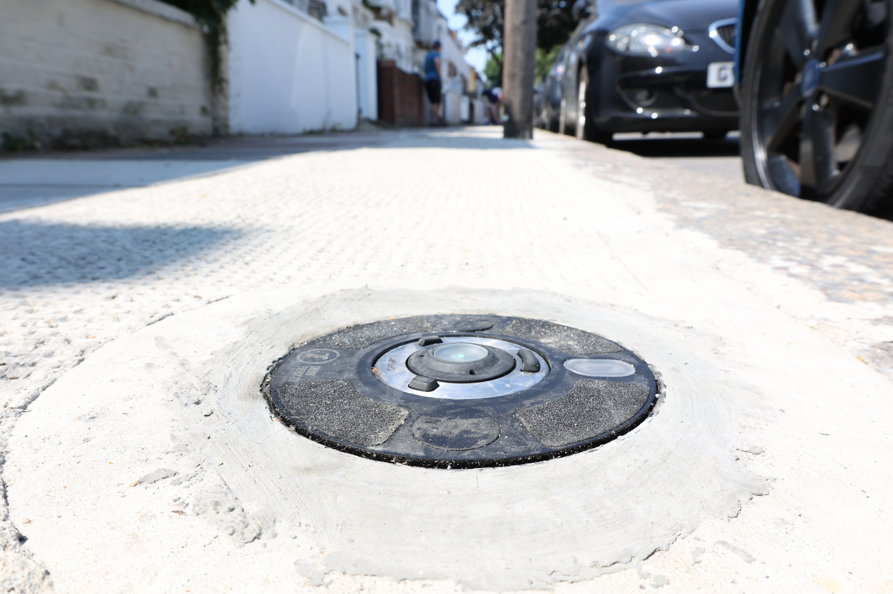
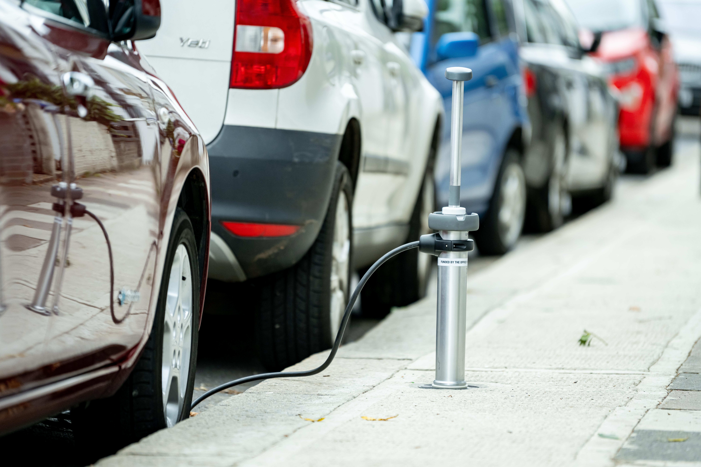

Shell aims to install 50,000 on-street charging points by 2025
The UK has currently 25,000 and some projects are aiming to increase the numbers
Shell announced they aim on installing 50,000 on-street electric vehicle charging points by the end of 2025.
This would be a third of the total on-street charging points recommended by the Climate Change Committee.
Last month, the Secretary of State for Transport, Grant Shapps, announced that the UK had reached 25,000 public EV chargepoints.
Ubitricity, an on-street charger provider the oil company acquired in February of this year, is already the leader in the UK with almost three in every twenty chargers actually installed, according to Zap-Map.
The company also announced that they are willing to cover the cost of the remaining 25 % of installing charging posts for the On-Street Residential Charging Scheme (ORCS) to local authorities who are willing to install ubitricity’s.
Where are they located?
Only the Isles of Scilly still lacks a public charging point. Westminster is leading the count with 1,059 charging devices, followed by Wandsworth with 603. While, Hammersmith and Fulham with 554, finishes the podium.
Ten local authorities still have less than ten charging devices. Back in October 2019, the earliest data source available, less than a third (103) of local authorities had less than 10 charging points, with Barrow-in-Furness being the other one with none.
On average, the UK has 86 public charging devices per 1,000 electric vehicles licensed. Pembrokeshire has the highest rate with almost two vehicles per charging device.
In the other hand, Stockport only has one charging devices per 1,000 vehicle. This could be explained by the fact that the Department for Transport registers every electric vehicle licensed, including by leasing companies.
Stockport being home to one of the largest lease processing centres in the UK, allows the city council to have the most EVs in the UK.
Raising awareness about electric cars
"I think there's a lot of work to be done in just raising awareness of that kind of information." said Gill Nowell, a board member from EVA England. Range-anxiety, or a possible lack of charging points are not the issue.
Adding that "Actually for the longer journeys it just takes a little bit more planning. Whilst we do have now over 25,000 public charge points, we do need more. But I think the rate of rollout of public charging is really quite impressive in the UK."
Having people test-drive an electric car can do the trick, "I do think once more people start driving electric cars and settling into the way of you know of driving them or charging them. I'm not sure that that whole charging points issue is going to be as much of an issue, as some people may anticipate at the moment."
Some projects about public charging are looking to increase the installation of chargers as well as giving a nearby option for those who cannot charge off-street.
Charge points that do not take space in the street
The STEP Project, funded by the OZEV, aims to deliver charge points to households who cannot charge at home, which approximately represents 40% households in the UK, while not taking any space in the street. The first charge points were launched at the end of July in Brent, a borough in London, with the trial increasing the numbers later in the year, not just in Brent but also in Camden, with a total of 150 charge points.
“One of the key criteria really of the charge point of the funding competition that government announced that we went funding for was that the charge points really shouldn't add an infrastructure to the streets because a huge part of concern, all of the concerns really regarding charging infrastructure from local council and from government, is that it takes away space from the street, it causes accessibility issues for anybody with mobility issues” said Sarah Clements, the Project Manager from Element Energy.
The charging point of the project she leads is comprised of two parts. The first one is the charge point that is flat and flush with the ground. “That has a really robust sealing mechanism” she said, and the other is called a lance. It was designed by Trojan Energy, and is what connects the charge point with the car.
“It's worth noting as well, but it's really easy to start charging so you plug it in both ends, and they just lock your car and it starts charging. You don't need to worry with any additional kind of cards or anything to pay for the charge point. Your lance, essentially is your unique identifier. So all of the billing happens automatically because you have your own lance. You don't need to set up any kind of additional payment.”
A lance that is provided for free during the trial period.
The advantage of installing multiple charge points at once
One of the advantages of this project is that it can install more than one charge point at the same time in the street.
"The way that the system works, 15 charge points are installed in a row. So 15 charge points to one grid connection. And the grid connection is in a cabinet on the street and you get 15 charge points with that and the idea is that there's no dedicated bays. So there's no EV only bays, which means that you don't have as much tension with diesel drivers on the streets."
Even if you don’t find a parking spot in front of your home, you can still park nearby and charge your vehicle without any problem by connecting the lance to a charge point that is available.
If 15 charge points installed at once seems that it would need a high grid connection, “We've designed the system to meet the requirements of a grid connection on-street, for a high-res installation, and the maximum power is 68 kilowatts so we're taking 68 kilowatts from the grid, and then that split across the 15 charge points”, she said.
Even if all 15 charging points are connected at the same time, the energy used would never exceed those 68 kilowatts and would be split up between all of them.
They are already looking at solutions that could allow the user to program when they want to charge. “The idea would be that we can give the customer the choice as to whether they want to have like a fully flexible system. Or whether they want to choose the hours of charging. And the idea would be that if they plug in at, you know 4pm, we wouldn't charge them until later at night if they've opted into that, into that flexible option”, she added that 90 of the charge points in Brent will soon have a smart charging system giving the option to drivers to decide when to charge, and avoid peak hours.
The feedback so far has been positive
For the trial, they recruited three different groups of participants to receive feedback from EV drivers, prospective EV drivers and observers. Each one of them will help inform what aspects could be implemented with the lance or the design of it, but also to understand the behaviour of neighbours. They are interested in receiving feedback from people with mobility disabilities and to know non-EV drivers’ parking behaviour.
Sarah explained that one aspect they are interested in knowing is if the Trojan project can be a factor for people to buy an electric vehicle and so far the numbers are promising.
“Out of the people we surveyed who are prospective EV drivers, over half of them, about 51%, said ‘you know the Trojan trial nearby has been a decisive factor in me thinking about getting an EV’.”
She added that four people have made the change to an electric vehicle and six more were about to do so in the near future.
Even though the trial is based in two London boroughs, Sarah doesn’t see why the charge points from the STEP project couldn’t be exported in other cities in the UK or even outside.
“There's no reason why it couldn't be installed in any city in the UK or Europe or worldwide. I guess the key criteria is having density of people without driveways. Because obviously if you get a lot of people driveways on a street, then you don't need 15 charge points installed in one go. So it's really for these high density areas where you don't have people with driveways or garages”.
For Sarah, the novel aspect that could help faster increase the installation of public charge points is the possibility to have whole streets installed at once, “I think the key part really is that, for the first time we're being able to install a set of charge points for a whole street, which is really kind of the novel aspect of this technology”.